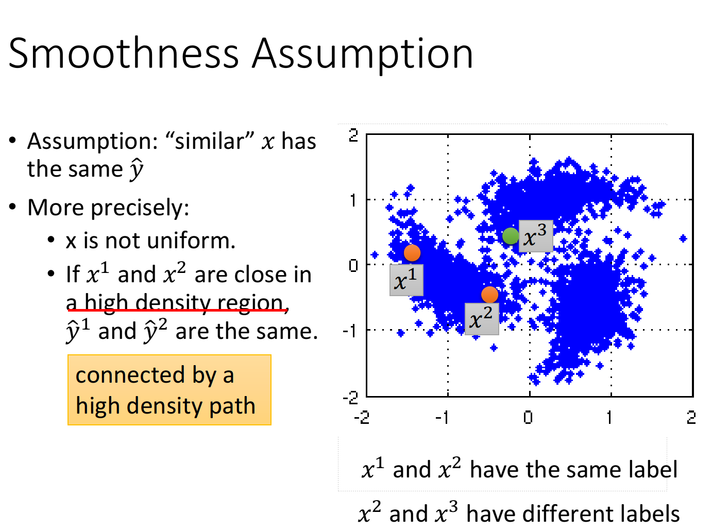
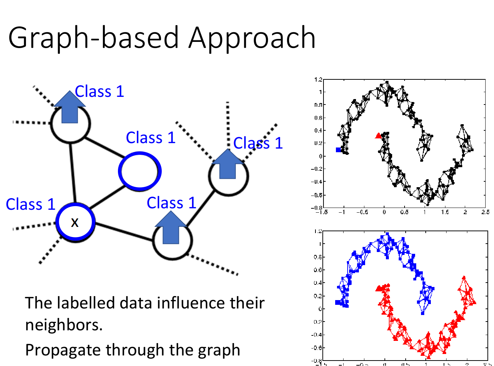

半监督学习介于监督学习和无监督学习之间，我们理解有监督和无监督常用的方式是看看它有没有label，而半监督其实就是有少数有label的数据，然后又大量的无label的数据，也不知道他们的正确性怎么样。假如我们只利用有Label的数据去学习，我们获取到的信息量或许会挺低的，如果能用上那些无label数据辅助学习，那效果就会好很多。
生成式模型
半监督学习的生成式模型和之前的逻辑回归部分一样，是那种直接计算均值和协方差的方式，然后用生成的模型辅助后面的判断。
由于我们还是存在有Label的数据的，所以还是能通过一些办法估算一些无label数据的概率。所以我们很容易能得到一个无label数据它当前属于某一类的概率
所以期望的概率我们也可以估算出来，这个方法是很直观的，首先是Label数据里的数量比上总数，然后每个unlabel数据是的概率的总和就是unlabel数据在里面数量的期望值。所以的期望就可以求出来了。
那相同的，均值也可以通过相似的方式求解出来，其实就是在之前求出概率的基础上再乘上个期望而已：
那求解也是求极大似然，然后微分就好：
生成式模型是基于假设的，所以通常效果会一般般，但它也像逻辑回归那样指导了我们方向吧，我个人觉得
Self Training
Self Training的思想非常简单，就是用当前模型来预测当前值，也就是将当前的丢进模型里估测出一个，然后再将丢尽当前模型里面更新一下数据。
这种方式必须得用Hard Label的方式，不像上面的生成式模型，我们能够计算出是一个浮点值，并没有进行准确的分类。但Self Training的方式需要将预测出来的二值化，得到一个准确的结果，不然这笔新的数据并没办法对就模型作出影响。
Entropy-Based Regulization
在这个模型里，我们加入了对数据熵的判断。对于label数据，我们需要计算它模型的交叉熵，而对于unlabel数据，我们可以直接求信息熵。信息熵其实就是一种描述某个状态，平均需要多少个信息量来表示，这点以前也讲过了。它其实就是将数据分成两部分，让他们最终的熵最低而已。
它损失函数的计算也很直观：
Smoothness Assumption

这个模型里面，它假设了相似的输入都具有相同的分类，假设和属于同一类，那他们是间接相似或者是直接相似的。比如：与相似，与相似，与相似,这里存在着一个演变的过程。
在实现上可以采用先聚类，然后再分类的方法，划分好class之后再拿去训练。但这样的效果通常一般般，毕竟如果在大量unlabel的情况下，有时是挺难聚类的。比如CNN的那个实验，假如去掉一堆label，也很难对那些照片进行聚类，可能要用到Deep Autoencoder才有那样的效果。
那假如我们对这些点建个图，用点像KD-tree那样的数据结构来划分数据，再基于kdt用KNN(Kth nearest neighbour)算法，选出每份数据最近的那k个点。那每个点之间的相似度应该怎么计算呢？可以采用RBM function来计算样本之间的相似度。
为什么我们要用exp呢，因为其实样本之间的相似度并没有我们想象中的那么高，特别是做了像batch normalization那样。如果样例非常相似，它的相似度会突然变大，用上exp能大幅度扩大这种效果，只要让他稍微远一点就不能相连。只不过，这种方法一定需要大量的数据，否则数据可能没法连起来，也没法预测。

在建好了图以后，我们能够看到，假如某一点是处于某个class的，那它相邻的哪些点，甚至是扩散到好个点之外的，它属于那个class的概率就会上升。
那对于整个图来说，计算其密集程度用的就是一个叫smooth的函数：
显而易见，他是求出每个相邻的点它属于某个class的概率之差，再乘上这条边的权重，这个权重值的就是相似度。由于这种运算是很难进行batch优化的，所以我们需要化成一个更简洁的形式，它用到的就是我们线性代数学过的二次型而已。其中，表示每个节点的度数，而W是这个图的邻接矩阵。
而最终的损失函数只是在这个原本有label的交叉熵上，简单的加入这一项而已。